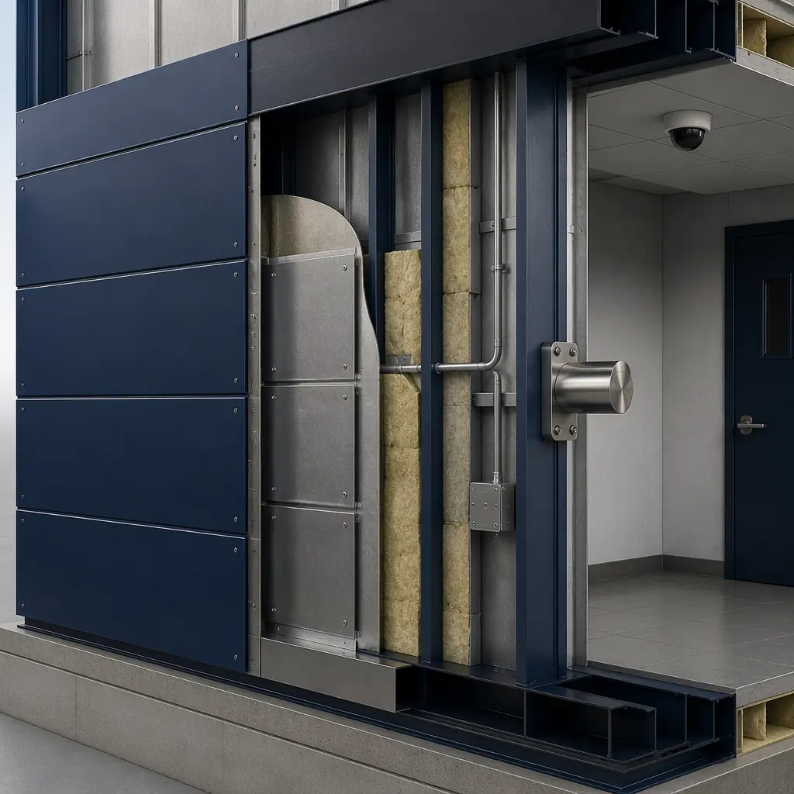
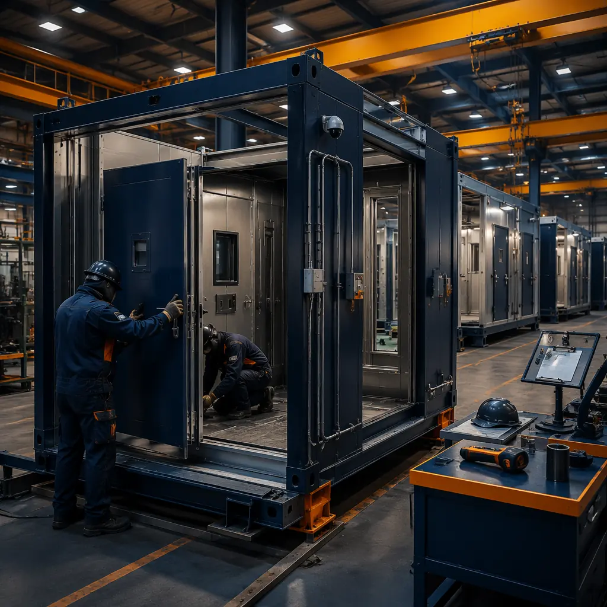
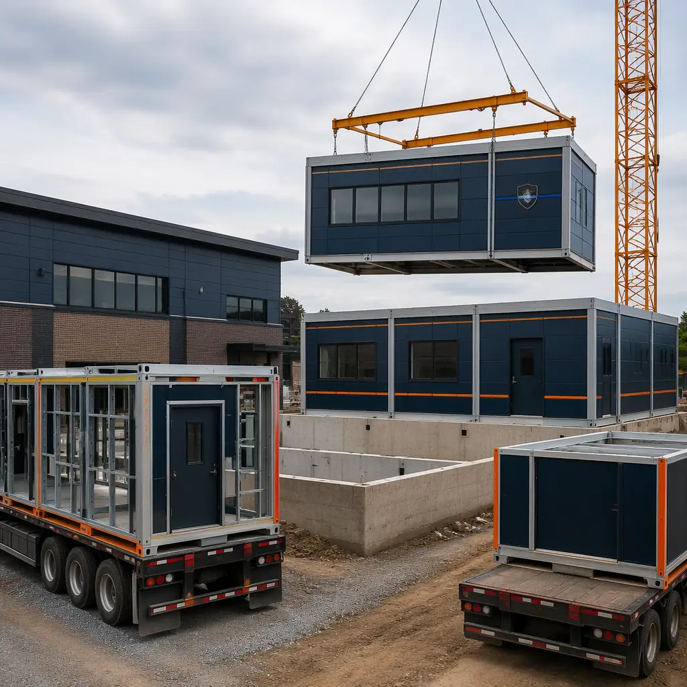
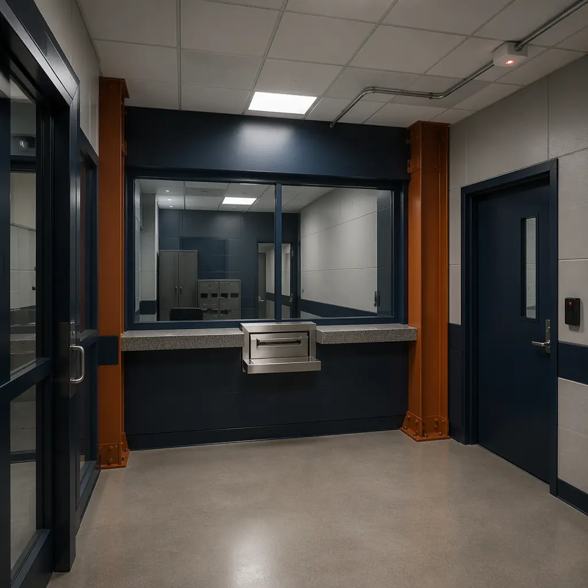

US law enforcement agencies operate approximately 18,000 police stations and sheriff's offices nationwide, with an average facility age of 28 years according to the National Institute of Justice. Over 40% of these facilities fail to meet current operational standards for evidence storage security, holding cell compliance with the Americans with Disabilities Act, or 911 dispatch center hardening against severe weather and physical attack — deficiencies that directly impact officer safety, evidence chain-of-custody integrity, and emergency response continuity. A traditional ground-up police station takes 24–36 months from bond approval to occupancy, with every month of delay extending the period that officers work from outdated, undersized, or non-compliant facilities. Modular prefabricated construction compresses the delivery timeline to 12–18 months by manufacturing 70–80% of the building — including ballistic-rated wall assemblies, pre-wired dispatch consoles, and factory-fitted detention modules — in a controlled factory environment while site foundations and utility connections proceed concurrently. For a municipality funding a $15 million police precinct through a 20-year general obligation bond at 4.25%, compressing the construction period by 12 months saves approximately $637,500 in interim interest costs — funds that remain in the general budget for patrol vehicles, body cameras, and community policing programs. Our analysis of modular government and municipal building delivery documents the same procurement and schedule advantages across public facility types.

The Operational Complexity That Makes Police Stations Unique — And Why Modular Excels
Police stations are among the most programmatically complex building types in municipal construction. Unlike a standard office building where floor plates follow a predictable open-plan or private-office template, a police station must integrate at least seven functionally distinct zones within a single facility:
- Public reception and community interface areas requiring welcoming, accessible design that simultaneously maintains visual separation between public visitors and secure operational zones — a dual-use architectural challenge that conventional construction resolves through expensive, sequentially built security vestibules and access control portals;
- Administrative and investigative office areas for patrol division, detective bureau, records management, and command staff — spaces that follow standard office construction standards but must incorporate physical separation between general operations and sensitive investigations units (internal affairs, narcotics, gang task force);
- 911 dispatch and emergency communications center requiring 24/7/365 operation with redundant power, HVAC, and data connectivity — a hardened facility-within-a-facility that cannot go offline during construction when replacing an existing station;
- Secure holding and detention areas with tamper-resistant fixtures, continuous-weld steel wall panels, ligature-resistant design, CCTV and duress alarm integration, and separate circulation paths for arrested individuals that never intersect with public or administrative corridors — construction requirements that add $350–$550 per square foot above standard commercial rates;
- Evidence and property storage with chain-of-custody access logging, drug vaults meeting DEA security standards (20-minute forced-entry rating), biological evidence refrigeration, and fire-suppression systems compatible with forensic evidence preservation;
- Armory and equipment storage with ballistic-rated walls (UL 752 Level 3 minimum), weapons lockers with biometric access control, and explosive ordnance disposal (EOD) equipment storage with blast-venting design;
- Emergency operations center (EOC) for multi-agency coordination during natural disasters, civil unrest, or active-shooter incidents — requiring SCIF-level acoustic isolation, redundant communications infrastructure, and independent backup power.
In conventional construction, these seven zones are built sequentially by separate trade contractors — framers, then electricians, then security system integrators, then detention equipment specialists — with each trade dependent on the previous trade completing rough-in before they can begin. The sequential dependency extends the construction duration to 24–36 months and creates change-order risk when security requirements evolve during the construction period. Modular construction compresses this by building each functional zone as a completed module in the factory: the holding cell module arrives with factory-installed tamper-resistant fixtures, continuous-weld steel panels, and pre-wired CCTV conduit; the dispatch center module arrives with raised-access flooring, redundant HVAC zoning, and pre-terminated communications cabling; the evidence vault module arrives with pre-installed DEA-compliant door assemblies, environmental monitoring sensor conduit, and fire-suppression rough-in. This factory approach eliminates the 8–14 weeks of sequential security-system integration that dominates the critical path of conventional police station construction. See our analysis of modular construction factory QC systems for how controlled-environment manufacturing achieves security specification compliance that field construction cannot reliably deliver.

Ballistic Protection and Security Hardening — Factory-Built, Not Field-Retrofitted
Ballistic protection in conventional police station construction is a retrofit exercise. The building is framed and enclosed as a standard commercial structure, then the general contractor subcontracts a security specialist to install UL 752-rated ballistic panels at reception counters, magistrate benches, holding cell walls, and exterior envelope sections facing public thoroughfares. This field-installed ballistic protection adds $120–$180 per square foot over the base building cost and introduces coordination risk: the ballistic panels must be attached to wall framing that was not originally designed to accommodate their mounting pattern, weight, or dimensional tolerances. The result is a security system that depends on field-installation quality — variable by subcontractor, weather conditions, and construction sequencing pressure — for performance that, if compromised, carries life-safety consequences.
In modular construction, ballistic-rated wall assemblies are built into the module at the factory. UL 752 Level 3 wall panels (rated to stop .44 Magnum rounds) or Level 4 panels (rated for 7.62mm rifle fire) are integrated into the module's structural steel frame during fabrication, under factory quality control with documented weld inspections, material certifications, and ballistic panel attachment verification. Each security-critical module — reception counter, holding cell block, evidence vault, magistrate hearing room — arrives on site with ballistic protection already tested and certified, eliminating the 4–7 weeks of field security integration that conventional construction requires. The same factory approach applies to forced-entry resistance (ASTM F3038 testing for door assemblies), blast mitigation (progressive collapse-resistant module connections), and cybersecurity hardening (pre-installed EMI-shielded conduit for secure communications pathways). For agencies considering modular delivery for other secure government facility types, see our guide to modular courthouse and judicial annex construction.

Phased Occupancy — Keeping the Existing Station Operational During Construction
For municipal police departments replacing an existing station on the same site, the most critical construction-phase challenge is maintaining continuous law enforcement operations. Officers cannot be relocated to temporary trailers — the secure holding, evidence storage, and 911 dispatch functions require permanent, hardened facilities that temporary structures cannot provide. Conventional construction forces an all-or-nothing approach: the existing station operates at full capacity until the new building is 100% complete, then a single weekend move transfers all functions — a high-risk transition where any construction delay pushes the move date forward and extends the period of operational compromise.
Modular construction enables phased occupancy that eliminates this transition risk. Because each functional zone of the police station is built as a completed module in the factory, the agency can sequence occupancy to match module delivery: Phase 1 — secure parking and sally port modules are set and commissioned, allowing patrol vehicle operations to transfer to the new facility while administrative offices remain in the existing building; Phase 2 — administrative and investigative office modules are completed, staff moves in; Phase 3 — the dispatch center module, the most complex single zone, is commissioned and the 911 function transfers with full redundancy testing before the cutover; Phase 4 — holding cells and evidence storage, the most security-sensitive zones, are commissioned last after all other functions are stable in the new facility. The existing station remains fully operational throughout Phases 1–3, and the final transition compresses the high-risk detention and evidence transfer into a 48-hour period rather than a single weekend move of the entire facility. This phased approach draws on the same concurrent-production methodology we apply to modular hospital construction, where clinical operations cannot pause during facility replacement.

Cost Structure — What a Modular Police Station Costs vs. Traditional Construction
| Cost Category | Traditional (25,000 sq ft) | Modular (25,000 sq ft) |
|---|---|---|
| Base building shell & envelope | $4.8–5.5M | $4.2–4.8M (factory efficiencies) |
| Ballistic protection & security hardening | $1.8–2.3M (field retrofit) | $1.2–1.6M (factory-integrated) |
| Holding cells & detention fixtures | $1.5–2.0M | $1.1–1.5M |
| Dispatch center & IT infrastructure | $2.0–2.8M | $1.7–2.2M (factory pre-wired) |
| On-site general conditions | 24–36 months × $45K/month = $1.1–1.6M | 12–18 months × $45K/month = $540–810K |
| Construction financing interest | $850K–1.2M (30-month avg) | $380–550K (15-month avg) |
| Total Project Cost Range | $12.1–15.4M | $9.1–11.5M |
Cost savings of $3.0–3.9M (24–26%) accrue from three sources: factory labor productivity for security-critical assembly (25–35% more efficient than field labor), reduced on-site general conditions (12–18 months of savings at $45K/month), and compressed construction financing (12–15 months of avoided interim interest). These savings are net of modular transportation costs, which for police station modules averaging 14 ft × 60 ft and 35,000 lbs each add approximately $3,200–$4,500 per module for regional delivery. For a comprehensive comparison of modular construction costs across building types, see our 2026 modular construction cost per square foot guide. For agencies concerned about long-term ownership costs, see our analysis of modular building lifecycle costs which documents 18–22% lower maintenance expenditures over a 30-year facility life for factory-built versus field-built public safety buildings.

Procurement and Compliance — How Modular Meets Law Enforcement Standards
Police station construction must satisfy a regulatory framework that spans building codes (IBC, local amendments), federal accessibility standards (ADA, ABA), law enforcement facility guidelines (NIJ standards, DOJ detention standards, CALEA facility requirements), and public procurement law (competitive bidding, prevailing wage, Buy America provisions for federally funded projects). Modular construction addresses each of these requirements through the same factory quality system that serves our structural warranty and guarantee program:
- IBC Occupancy Classification B (Business) and I-3 (Detention): Modular police stations are engineered for the dual occupancy classification that law enforcement facilities require. Administrative and public areas are classified as Group B; holding and detention areas are classified as Group I-3 with the associated fire-rated construction (2-hour separation from Group B areas), automatic sprinkler coverage (NFPA 13 with tamper-resistant sprinkler heads in holding cells), and smoke control systems. Factory construction enables the fire-rated assemblies to be built and tested under controlled conditions — the gypsum shaft liner between Group B and I-3 areas is installed, taped, and inspected in the factory rather than field-constructed with the variability of on-site drywall installation.
- ADA and ABA Accessibility: Police stations are Title II facilities under the ADA, requiring full accessibility for both public visitors and employees with disabilities. Modular factory construction ensures that door clear widths (32 inches minimum), turning radii (60-inch diameter in holding cells and interview rooms), counter heights (36 inches maximum at public service counters), and accessible route slopes (1:20 maximum running slope) are achieved through factory jigs that eliminate the field-measurement variability responsible for the majority of ADA non-compliance in conventional construction.
- NIJ and CALEA Facility Standards: The National Institute of Justice publishes facility design guidelines covering evidence storage environmental controls (temperature 65–75°F, humidity 45–55%), interview room acoustic privacy (STC 50 minimum between adjacent interview rooms), and sally port vehicle security (electronically interlocked gates with 15-second minimum cycle time). Modular construction achieves these standards through factory-installed environmental monitoring systems, pre-tested acoustic wall assemblies, and pre-wired gate control panels — eliminating the sequential contractor coordination that makes these standards difficult to achieve in conventional construction.
- Competitive Bidding Compatibility: Modular police station construction is fully compatible with public procurement processes. The project is bid as a design-build contract with performance specifications for module fabrication, site preparation, and module installation. The factory production schedule — 6–9 months for module fabrication — allows the bid to be awarded based on fixed-price module costs rather than the time-and-materials variability of conventional construction. For a full treatment of public procurement strategy, see our guide to modular construction RFP and procurement.
Law enforcement agencies in 18 countries have deployed MODURA modular facilities for applications ranging from rural sheriff substations (2,500 sq ft, 2 holding cells, 12 officers) to regional police headquarters (45,000 sq ft, 18 holding cells, 200+ officers). Each facility is factory-built to the same ISO 9001 quality system, with ballistic protection, evidence security, and dispatch center hardening integrated during module fabrication rather than retrofitted during field construction. The result is a police station that enters service 12–18 months faster than conventional construction and costs 24–26% less over the total project lifecycle — delivering the operational readiness that public safety demands and the fiscal discipline that taxpayers expect.